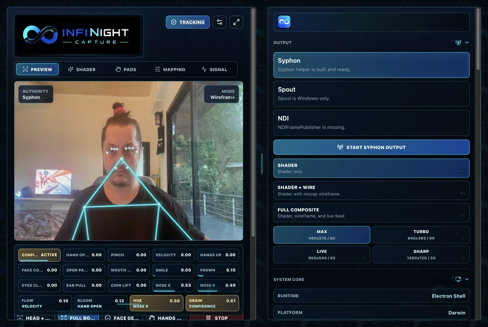
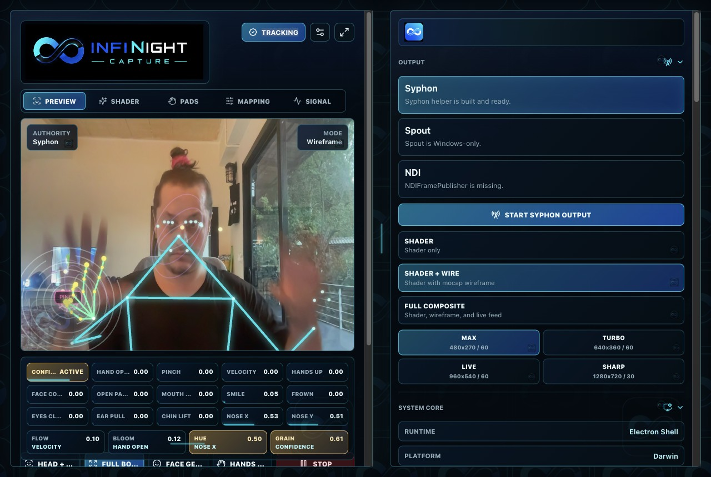
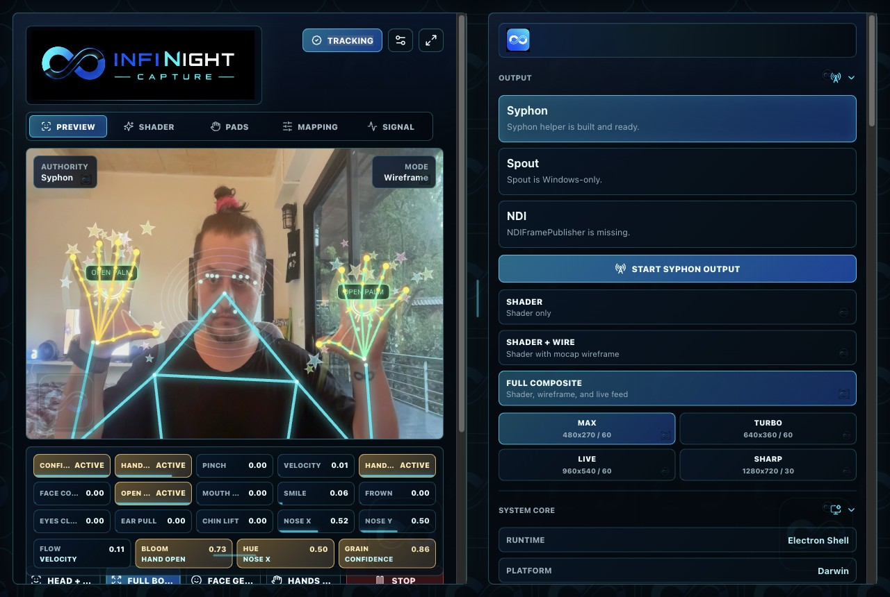

Gesture Matrix
Route face, hand, and pose events to shader parameters and composition controls.
Webcam mocap for live visuals
Turn upper-body gestures, hands, and facial motion into reactive shader visuals for VJ sets, streams, installations, and live performance rigs.
Hands, upper body, face signals, and gesture states.
Map motion to melt, bloom, warp, fire, and custom GLSL presets.
Built for Syphon, Spout, and NDI desktop performance workflows.
Built for the booth
Route face, hand, and pose events to shader parameters and composition controls.
Bring in GLSL snippets, raw URLs, Shadertoy-style code, and saved presets.
Package live visuals for macOS Syphon, Windows Spout, and NDI pipelines.
Let anyone try the app for free with a watermark on exported and routed output.
Output composition
Choose a clean shader feed, add tracking wireframe for motion context, or include the live camera layer when the performer should stay visible.

Send the generated shader visual as a clean Syphon or Spout source.

Composite gesture tracking lines over the shader for a mocap-forward look.

Send the full performance feed with camera, tracking, and effects together.
Simple pricing
Explore the full visual workflow with a watermark on output.
Get DemoRemove the watermark and use the app in live performance outputs.
Buy LicenseFirst release
The page is wired for platform downloads. Drop release files into your delivery service, then replace these links with the final URLs.